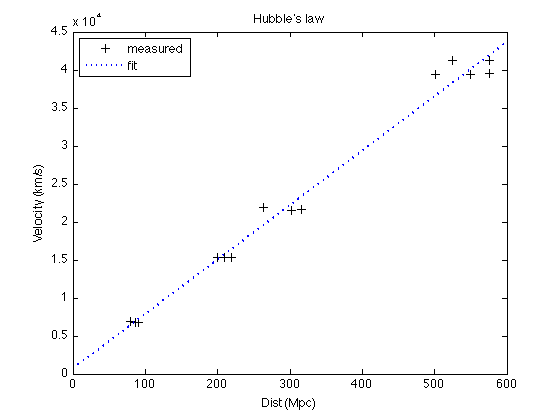

Hubble's Law
By completing Project CLEA, you should now be able to write three arrays that include your measured data:
klines = [4474,4474, ... ]; hlines = [4514,4514, ... ]; appm = [16.6,16.8, ... ];
Let's calculate the redshift from the wavelength measurements:
zk = (klines- ... ) ... ; zh = ... ;
From the redshift, we can calculate the recessional velocities:
vh = 2.99792e5* ... ; vk = ... ;
Take the average for each galaxy:
avgv = ... ;
Assuming that each galaxy has the same absolute magnitude, M=-22:
M = ... ;
Using the apparent magnitudes you recorded, the distance to all of the galaxies can be calculated:
dist = 10.^( ... );
in the unit of pc. Or, in the unit of Mpc:
distmpc = ... ;
Now you should have a redshift-distance relation for all galaxies:
figure(1); clf; plot( ... 'k+', 'LineWidth', 1.2, 'MarkerSize', 7) ... title('Hubble''s law')
(Note the way I put Hubble's law in the title!)
Hubble's law tells us that our data can be fitted by a straight line, i.e., a polynomial with degree 1:
p = polyfit( ... )
p = ... ...
This gives us a fitted line of our data if we put p into the function polyval. Note that, since the data array distmpc is not sorted in ascending or descending way, if you just use:
vfit = polyval(p, distmpc);
to evaluate the fitted function, when you make plot of vfit using lines, it will look weird. The better way is to define a new array for the distance:
newdist = linspace( ... ); vfit = polyval(p, newdist);
Now we can compare the fit to original data:
hold on;
plot( ... )
...
 This is the best fit of our data. However, note that the y-intercept is not zero, which is inconsistent with the idea of Hubble's law.
Alternatively, as described in the handout, we can apply the magic of matrix math here to find the best slope of the Hubble's law:
a = ...
a = ...
(Basically, in MATLAB, if matrices A and B don't have the right dimensions to perform matrix division (e.g., A is not square), the right division X = B/A will be considered to be the solution in the least squares sense to the system of equations XA = B.)
Therefore, the solution a provides the slope we want:
plot(newdist, a*newdist, 'r--')
legend( ... );